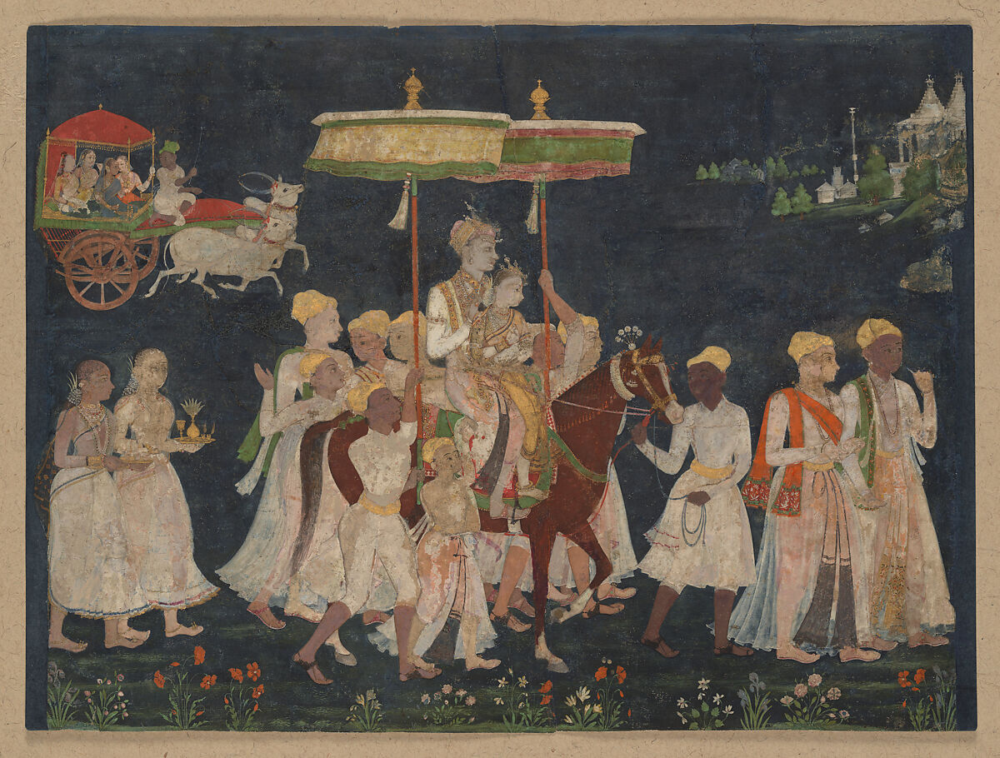
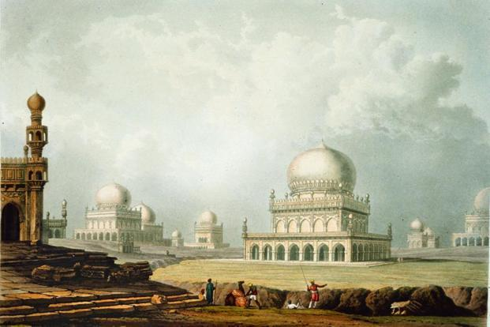

The Civilization Behind the Charminar

The Charminar was constructed by the Qutb Shahi dynasty, who were rulers of the Golconda Sultanate in the Deccan region of India from the 1500s until 1687. The Qutb Shahi Dynasty was a civilization that place great importance to their culture, their city planning efforts, their religion, and their art. The Qutb Shahis were influenced by both Persian-Islamic cultures and the local culture of the Deccan region. Rather than replacing one culture with the other, however, they chose to blend the two cultures into a new and distinct cultural identiyy for themselves and their nation.
Some of the stuctures that exhibit this blended culture include the Charminar, the Golconda Fort, and the Qutb Shahi tombs. The designs of each of these structures exhibit the authority of the Qutb Shahi dynasty as well as their creative abilities as a ruling dynasty. Many of their structures also has meanings beyond their structural purpose. The influence of the Qutb Shahi dynasty and their culture is still visible in many aspects of Hyderabad's current culture and language.
